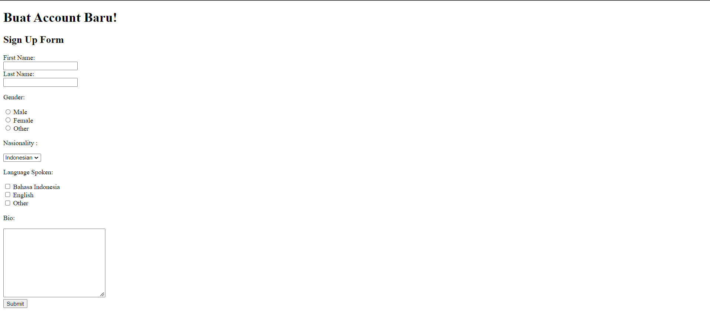

Version Control and Branch Management (Git)
Membuat sebuah repository dan melakukan branch management, berikut adalah Screenschot dari insight Network
Berikut adalah hasil pengerjaan :
Introduction UI and UX
-
Carilah desain ui ux untuk dengan tema bebas. Masukkan desain tersebut ke dalam google doc. Cobalah identifikasi bagian-bagian yang ada pada website tersebut. (minimal 3 halaman). Kalian dapat menggunakan sumber berikut :
- https://www.uplabs.com/collections/material-web
- https://dribbble.com/tags/website
- https://www.freepik.com/free-photos-vectors/website-page etc..
- Tuliskan secara detail fitur dan letak dari UX yang kalian temukan. (minimal 3)
- Tuliskan secara detail fitur dan letak dari UI yang kalian temukan. (minimal 3) Tentukan color pallet dari desain tersebut.
Berikut adalah hasil pengerjaan dapat diakses di link berikut Link Google Doc
Figma
- Buat sebuah desain UI/UX dari desain yang telah kalian pilih sebelumnya menggunakan tools Figma.
- Buatlah prototype dari desain yang telah kalian buat.
Berikut adalah hasil pengerjaan : Figma
HTML
Pada tugas ini membuat 3 halaman web sederhana, dengan diberikan ketentuan template yang harus di ikuti.
Berikut adalah hasil pengerjaan : Link Repo
Halaman Awal

Form Daftar
Welcome
CSS
Pada tugas ini membuat tampilan web dengan menerapkan CSS pada tugas diberikan dua tugas.
Berikut adalah hasil pengerjaan : Link Repo
Bagian Pertama
Bagian Kedua
Bootstrap
Pada tugas ini membuat tampilan web dengan mengikuti gambar yang diberikan
Berikut adalah hasil pengerjaan : Link Repo
Tampilan website Pengerjaan
Javascript
Mengerjakan beberapa soal terkait javascript
Berikut adalah hasil pengerjaan : Link Repo
Hasil Pengerjaan Tugas
No.1
No.2-6
Clean Code
Mampu menuliskan kode yang rapi dan terstruktur, Untuk Pengerjaan sendiri saya mengerjakan menggunakan txt dan dibantu menggunakan dart agar membantu saya melihat warna tiap relasi pada bahasa pemprogram di vscode
Berikut adalah hasil pengerjaan : Link Repo